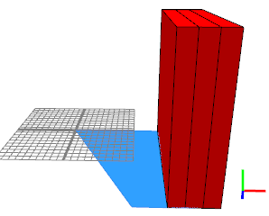

color operation
color(hexValue)
color(red, green, blue)
color(red, green, blue, opacity)
hexValue string Color to set, in the format "#rrggbb" or "#rrggbboo" (hex).
red, green, blue, opacity float Color to set in red, green, blue, opacity components (range is 0.0 to 1.0).
The color operation sets the color of the current shape's material. Input parameter values for red, green, blue, or opacity that are outside the range [0,1] are clamped to [0,1].
In CGA, colors are always in (non-linear) sRGB.
This command has the same effect as set(material.color.{r|g|b}, val), it is a shortcut for convenience.
Related
Examples
Three ways to set a shape's color

Lot-->
extrude(20)
split(x) { 2: color("#ff0000") X.
| 2: color(1, 0, 0) X.
| 2: set(material.color.r, 1.0)
set(material.color.g, 0)
set(material.color.b, 0) X. }
Three ways to set a shape's color. The results are identical.